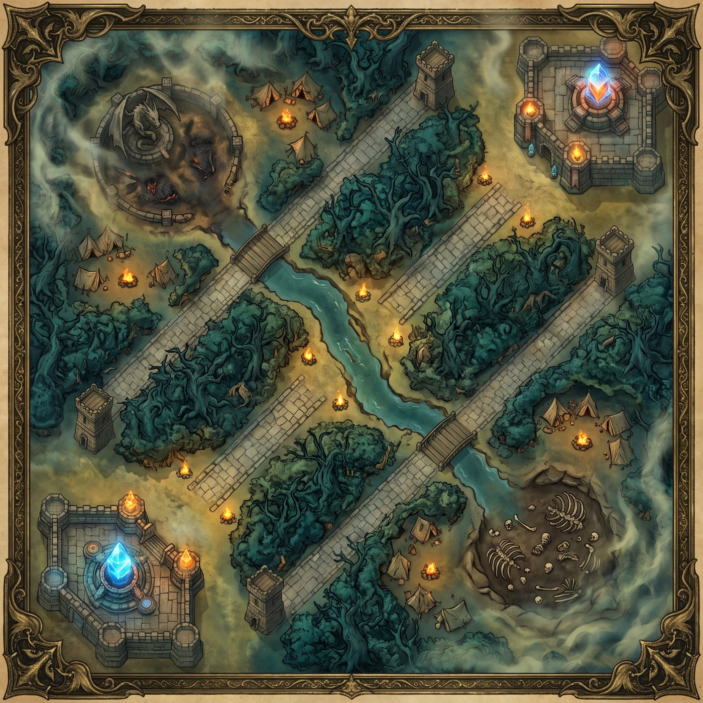

Um MOBA de mesa para dois
Você não é o campeão.
Você é o técnico.
Cada jogador drafta cinco heróis — um por rota — e comanda o time inteiro. Mapa completo: três rotas, selva, rio, objetivos épicos. Duas pessoas na mesa.
- Jogadores
- 1v1cada um comanda 5 heróis
- Duração
- 45minutos, ~10 rodadas
- Por rodada
- 3d6três ordens, cinco heróis
- Vitória
- Nexusempurrar rota é o caminho
02 — O motor do design
Cada rota é um jogo diferente
Não são cinco personagens com números diferentes. São cinco subsistemas com fantasias, mecânicas e custos de atenção distintos — que conversam entre si.
03 — Loop
A rodada
Seis passos. Cerca de quatro minutos com dois jogadores. Dez rodadas fecham a partida.
04 — Laboratório
Um dado move o time.
Três dados agem.
Você rola quatro dados por rodada, e eles fazem coisas diferentes. O Dado Mestre é o total de casas que os seus cinco heróis andam juntos. Os três Dados de Ação viram a Força da habilidade de quem receber cada um.
A Força mínima é a personalidade da classe
O quanto uma habilidade exige de Força é o arquétipo. Não precisa de regra extra para isso.
| Classe | Requisito | Como se sente na mão |
|---|
Válvulas contra a má sorte
Dado sem escape vira frustração. Todas as válvulas passam pela selva ou pela loja — o que faz o jungler importar de verdade: ele controla quem tem mais controle sobre a própria sorte.
| Fonte | Efeito |
|---|---|
| Sentinela Azul · selva | Re-rolar 1 dado por rodada, durante 3 rodadas |
| Fera Escarlate · selva | +1 de dano em toda alocação, durante 3 rodadas |
| Ampulheta Rachada · item | Re-rolar 1 dado por rodada |
| Itens de assinatura | Alargam a janela de uma habilidade — 4–6 vira 2–6 |
| Nível 5 | Ganha o quarto dado |
05 — Tabuleiro
O mapa
Três rotas, selva nos dois quadrantes, rio na diagonal. O Meio é mais curto de propósito — é por isso que ele chega primeiro em qualquer lugar.

Terreno
- Rota
- Selva
- Rio
- Base azul
- Base carmim
Comprimento das rotas
Clique numa peça para selecionar e depois numa casa para mover. As casas válidas ficam tracejadas.
06 — Draft
Heróis
Dez no protótipo — dois por rota, o mínimo para o draft existir. A meta pede vinte. Nomes e história são autorais; a referência de kit é interna e explícita.
07 — Loja
Itens
Camada única, sem árvore de componentes — jogo leve não aguenta. Três slots por herói. Os itens de resposta não são opcionais: sem eles todo mundo compra a mesma build e o meta morre no terceiro jogo.
| Item | Ouro | Efeito | Tipo |
|---|
08 — Neutros
Monstros e objetivos
Os épicos não são buff — são relógio. Eles colocam na mesa a hora em que alguém vai ter que brigar. Sem isso, dois jogadores cautelosos jogam para sempre.
| Monstro | Surge | Recompensa |
|---|
09 — Léxico
Glossário
Termo definido não muda de nome. Sinônimo inventado no meio da partida é o começo de uma discussão de regra.